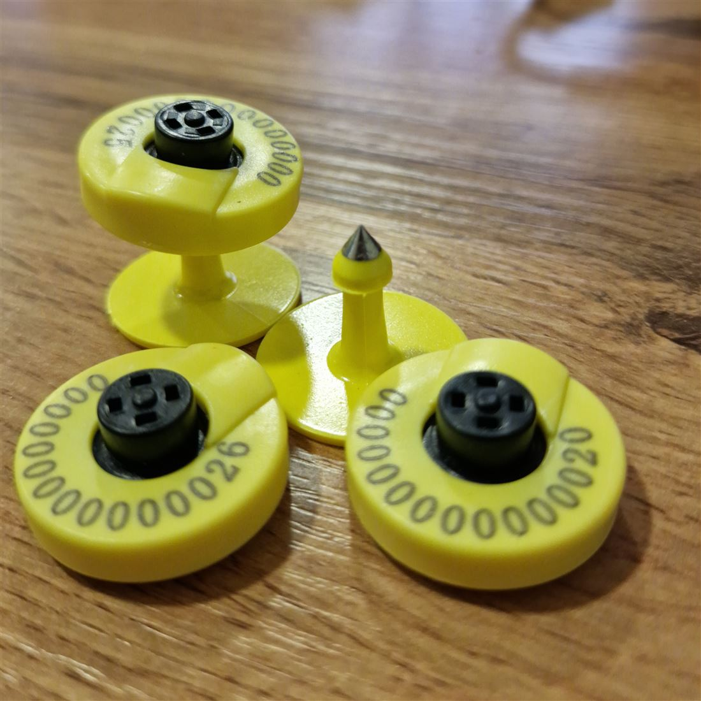
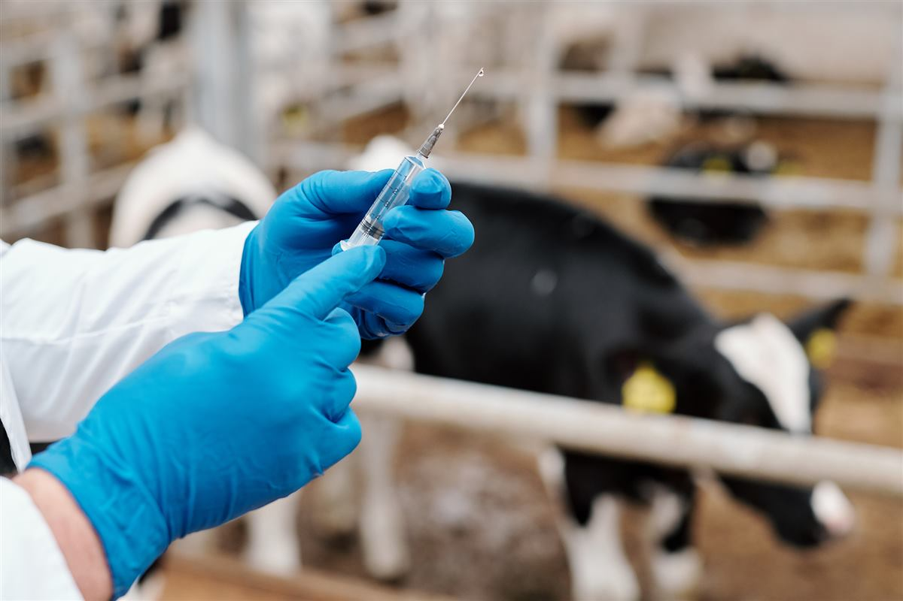

Фермерлер үчүн онлайн аянтча
- Эсеп-санак
- Жандыктардын вет абалы
- Маркетплейс
- СРМ система
Фермер, дыйкандар үчүн эко-система
Айыл чарбасын санариптештирген, фермерлерди, касаптарды, алуучу-сатуучуларды бириктирген эко система

Биздин сунуш
Чарба алты багытта иштейт: күнүмдүк эсеп-катардан тартып, өлкө деңгээлиндеги көзөмөлгө чейин.

Ар бир малдын морду адамдын манжа изи сыяктуу кайталанбайт. Чарба ушул принципти колдонот.

Мамлекеттик токтомдорду, стандарттарды жана жол-жоболорду фермерге түшүнүктүү тилде жеткирүү үчүн өзүбүздүн тил моделин машыктырабыз.
Идентификация коду
Электрондук биркалар жана чиптер эл аралык ISO 11784/11785 стандартына ылайык номерленет.
Чарба ветеринардык мамлекеттик системаны жана башка компанияларды бир API аркылуу байланыштырат.

Өкмөткө эмне пайда?
Чарба өлкөнүн мал чарбачылыгын толук көрүнүктүү кылат — инвентаризациядан баа саясатына чейин.
Инвентаризация
Оорулардын алдын алуу
Сатууларды көзөмөлдөө
Жайыттарды көзөмөлдөө
Вет кызматтар үчүн онлайн төлөм
Бюрократияны азайтуу
Кошумча функциялар
Үнөмдөө
Эттин баасын көзөмөлдөө
Колл-центрди жеңилдетүү
Кайсы аймакта канча баш мал бар, кандай абалда экени — реалдуу убакытта, бир экранда.

Бизге эмне керек?
Келишим
Интеграция — API
Ветеринардык кызматтын колдоосу
Токтомду өзгөртүү
Кой-эчки, чочколор үчүн жеке идентификация
Электрондук биркалар
Коддордун структурасын өзгөртүү
Кийинки кадамдар
Чарбанын архитектурасы башка тармактарга да кеңейе алат.
Учурдагы платформанын демо-версиясы жолугушууда түз көрсөтүлөт.
Команда
8 жылдык тажрыйба
5 жылдык тажрыйба
6 жылдык тажрыйба
6 жылдык тажрыйба
Команда мурда Mancho Devs, Donsoft, Fintech PRO, Lender Invest жана Batele LLC сыяктуу компанияларда финтех жана мобилдик продукттарды өнүктүрүшкөн.